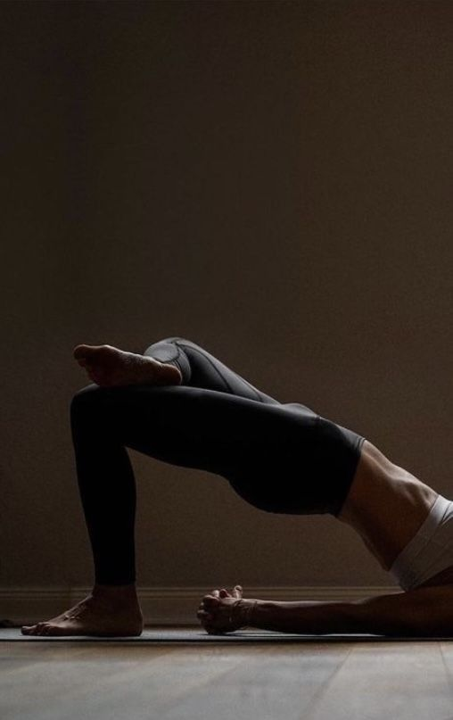

Mini rutina de pilates en casa

Ejercicios
- El Cien: Túmbate boca arriba, levanta las piernas en ángulo de 90º y realiza pequeños movimientos de bombeo con los brazos mientras respiras rítmicamente.
- El Puente: Con las rodillas flexionadas y pies apoyados, eleva las caderas hasta formar una línea recta y aprieta los glúteos; baja vértebra a vértebra.
- Posición Gato-Vaca: A cuatro patas, inhalando arquea la espalda y mirando arriba; exhalando redondea la espalda y acerca la barbilla al pecho.
- Abdominales superiores: Boca arriba con rodillas flexionadas, eleva cabeza y hombros intentando llevar el codo hacia la rodilla opuesta de forma controlada.
- Estiramiento lateral: Sentado o de pie, apoya una mano y lleva el brazo contrario por encima de la cabeza para estirar los laterales del tronco.
Realiza 8-12 repeticiones por ejercicio a ritmo controlado, centrando la respiración y la conexión del core.